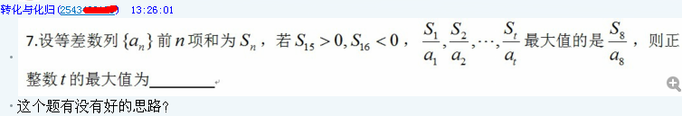

(48.87 KB)
2012-10-28 16:11
中间略省一段……
(31.33 KB)
2012-10-28 16:11
如图所示，这里暂且按照第一种的理解。
依题意知 $a_n$ 递减，且 $a_1$, $a_2$, $\ldots$, $a_8>0$, $a_9$, $a_{10}$, $\ldots <0$，故此 $\displaystyle \frac{S_1}{a_1}$, $\displaystyle \frac{S_2}{a_2}$, $\ldots $, $\displaystyle \frac{S_8}{a_8}>0$, $\displaystyle \frac{S_9}{a_9}$, $\displaystyle \frac{S_{10}}{a_{10}}$, $\ldots $, $\displaystyle \frac{S_{15}}{a_{15}}<0$, $\displaystyle \frac{S_{16}}{a_{16}}$, $\displaystyle \frac{S_{17}}{a_{17}}$, $\ldots >0$，且由于 $S_1$ 到 $S_8$ 递增而 $a_1$ 到 $a_8$ 递减，所以 $\displaystyle \frac{S_1}{a_1}$ 到 $\displaystyle \frac{S_8}{a_8}$ 递增，所以如果存在正整数 $m$ 使 $\displaystyle \frac{S_m}{a_m}>\frac{S_8}{a_8}$ 则必然 $m\geqslant 16$。
设 $S_n=An^2+Bn$，则 $a_n=S_n-S_{n-1}=A(2n-1)+B$，依题意知 $A<0$, $B>0$, $\displaystyle \frac{15}2<-\frac B{2A}<8$，令 $\displaystyle \frac BA=u$，则 $-15>u>-16$，于是
\[\frac{S_n}{a_n}=\frac{An^2+Bn}{A(2n-1)+B}=\frac{n^2+un}{2n-1+u},\]
设 $m\geqslant 16$ 使 $\displaystyle \frac{S_m}{a_m}>\frac{S_8}{a_8}$，则
\[\frac{m^2+um}{2m-1+u}>\frac{64+8 u}{15+u},\]
作差分解等价于
\[\frac{(m-8)(m u+15 m+u^2+7 u-8)}{(u+15)(2m-1+u)}>0,\]
由 $-15>u>-16$, $m\geqslant 16$ 知 $\displaystyle \frac{m-8}{(u+15)(2m-1+u)}<0$，所以上式等价于
\[m u+15 m+u^2+7 u-8<0,\]
即
\[m>\frac{u^2+7u-8}{-(u+15)},\]
不难求得当 $-15>u>-16$ 时有 $\displaystyle \frac{u^2+7u-8}{-(u+15)}$ 的取值范围是 $(136,+\infty)$，所以至少要 $m=137$ 才存在 $u$ 使 $\displaystyle \frac{S_{137}}{a_{137}}>\frac{S_8}{a_8}$，也就是说只要 $t\leqslant 136$，则满足条件的所有数列都会有 $\displaystyle \frac{S_1}{a_1}$, $\displaystyle \frac{S_2}{a_2}$, $\ldots$, $\displaystyle \frac{S_t}{a_t}$ 中必定 $\displaystyle \frac{S_8}{a_8}$ 最大。
|
 发表于 2012-10-28 16:11
发表于 2012-10-28 16:11
 发表于 2012-10-29 23:39
发表于 2012-10-29 23:39